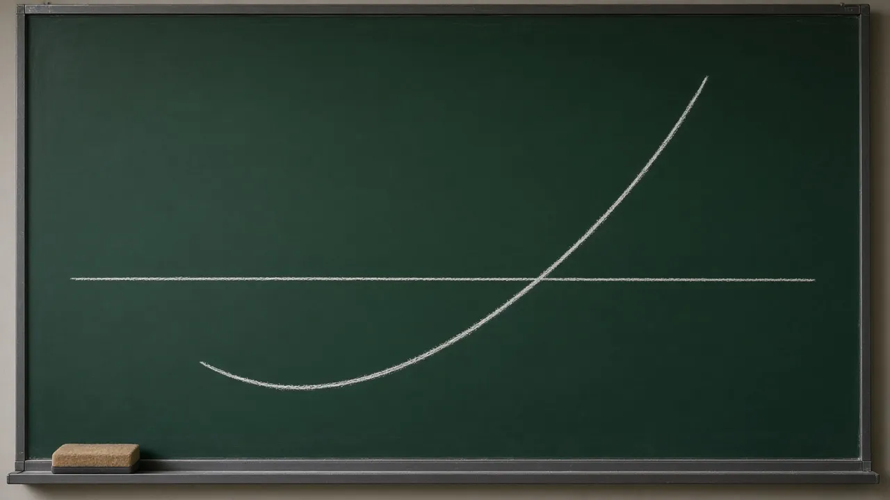

The Gram Schmidt process takes any basis of a subspace of $\mathbb{R}^n$ and turns it, one vector at a time, into an orthogonal basis for the same subspace: a basis whose vectors are all perpendicular to each other. The idea is simple. Keep the first vector. From each later vector, subtract its shadow (its projection) on the directions you already have, and keep what is left. Divide each result by its length and you have an orthonormal basis.
Every dot on this page is the ordinary inner product. A weighted product can move which pairs are perpendicular. The four properties, and an exact numerical check of that disagreement, are on inner product spaces.
Without the fog
Imagine two arrows that point in roughly the same direction. They span a plane, but they overlap: part of the second arrow repeats the first. Gram Schmidt removes the overlap. It splits the second arrow into a piece along the first arrow and a piece at right angles to it, and keeps only the right angle piece. Nothing is lost, because the piece you threw away was already reachable from the first arrow.
Hefferon's Linear Algebra introduces the process exactly this way: projecting $\mathbf{v}$ onto the line spanned by $\mathbf{s}$ splits $\mathbf{v}$ into two parts, $\operatorname{proj}_{\mathbf{s}}(\mathbf{v})$ and $\mathbf{v} - \operatorname{proj}_{\mathbf{s}}(\mathbf{v})$, that are orthogonal and so do not interact.
Why orthogonal bases are worth having
- They are automatically independent. Hefferon's Theorem 2.2 (Chapter Three, Section VI.2) says a set of nonzero, mutually orthogonal vectors is linearly independent. Dot the equation $c_1\mathbf{v}_1 + \dots + c_k\mathbf{v}_k = \mathbf{0}$ with $\mathbf{v}_i$ and every term but one vanishes, leaving $c_i(\mathbf{v}_i \cdot \mathbf{v}_i) = 0$, so $c_i = 0$.
- Coordinates become dot products. Margalit and Rabinoff's Interactive Linear Algebra (Section 6.4) gives the recipe: if $\{\mathbf{u}_1, \dots, \mathbf{u}_m\}$ is an orthogonal basis and $\mathbf{x}$ is in the subspace, the coordinate on $\mathbf{u}_i$ is $\dfrac{\mathbf{x}\cdot\mathbf{u}_i}{\mathbf{u}_i\cdot\mathbf{u}_i}$. No row reduction is needed. With an orthonormal basis the coordinate is just $\mathbf{x}\cdot\mathbf{u}_i$.
- Projections become a sum. The same section's Projection Formula writes the projection of any $\mathbf{x}$ onto the subspace as the sum of those terms times $\mathbf{u}_i$, again only when the basis is orthogonal.

Inner product spaces
Why a weighted product can call a different pair orthogonal than the dots on this page.

Orthogonal projection and least squares
Reuse an orthogonal basis to project, then meet the normal equations when the basis is not orthogonal.

Change of basis explained
An orthonormal basis makes the change of basis inverse a transpose.

Basis and dimension explained
The spanning independent set this process rewrites, without changing the subspace.
The process, step by step
Start with a basis $\mathbf{v}_1, \mathbf{v}_2, \dots, \mathbf{v}_m$ of a subspace $W$. Define
$$\mathbf{u}_1 = \mathbf{v}_1,$$
$$\mathbf{u}_2 = \mathbf{v}_2 - \frac{\mathbf{v}_2\cdot\mathbf{u}_1}{\mathbf{u}_1\cdot\mathbf{u}_1}\,\mathbf{u}_1,$$
$$\mathbf{u}_3 = \mathbf{v}_3 - \frac{\mathbf{v}_3\cdot\mathbf{u}_1}{\mathbf{u}_1\cdot\mathbf{u}_1}\,\mathbf{u}_1 - \frac{\mathbf{v}_3\cdot\mathbf{u}_2}{\mathbf{u}_2\cdot\mathbf{u}_2}\,\mathbf{u}_2,$$
and so on: each $\mathbf{u}_k$ is $\mathbf{v}_k$ minus its projections onto all the earlier $\mathbf{u}$ vectors. Hefferon states this as Theorem 2.7 and Interactive Linear Algebra as the Gram Schmidt Process in Section 6.4: the vectors $\mathbf{u}_1, \dots, \mathbf{u}_m$ form an orthogonal basis for the same subspace. Both proofs also show more: for every $k$, the first $k$ new vectors span the same space as the first $k$ old ones.
Two habits make hand calculation easier. Always project onto the new vectors $\mathbf{u}_i$, never the old $\mathbf{v}_i$, because the formula relies on the $\mathbf{u}_i$ being orthogonal. And you may rescale any $\mathbf{u}_k$ to clear fractions before moving on, since a multiple of a vector points the same way and the later projections do not change.
Worked example 1: two vectors in the plane
This is Hefferon's Example 2.4. Start with $\boldsymbol{\beta}_1 = (4, 2)$ and $\boldsymbol{\beta}_2 = (1, 3)$, a basis of $\mathbb{R}^2$ whose vectors are not orthogonal: $(4,2)\cdot(1,3) = 4 + 6 = 10$.
- $\boldsymbol{\kappa}_1 = (4, 2)$.
- $\boldsymbol{\kappa}_2 = (1, 3) - \dfrac{10}{20}(4, 2) = (1, 3) - (2, 1) = (-1, 2)$, using $(4,2)\cdot(4,2) = 20$.
Check: $(4,2)\cdot(-1,2) = -4 + 4 = 0$. So $\langle (4,2), (-1,2) \rangle$ is an orthogonal basis of the plane.
Worked example 2: three vectors in three dimensional space
This is Hefferon's Example 2.6. Start with $\boldsymbol{\beta}_1 = (1,1,1)$, $\boldsymbol{\beta}_2 = (0,2,0)$ and $\boldsymbol{\beta}_3 = (1,0,3)$.
- $\boldsymbol{\kappa}_1 = (1,1,1)$, with $\boldsymbol{\kappa}_1\cdot\boldsymbol{\kappa}_1 = 3$.
- $\boldsymbol{\beta}_2\cdot\boldsymbol{\kappa}_1 = 2$, so $\boldsymbol{\kappa}_2 = (0,2,0) - \tfrac23(1,1,1) = \left(-\tfrac23, \tfrac43, -\tfrac23\right)$, with $\boldsymbol{\kappa}_2\cdot\boldsymbol{\kappa}_2 = \tfrac49 + \tfrac{16}9 + \tfrac49 = \tfrac83$.
- $\boldsymbol{\beta}_3\cdot\boldsymbol{\kappa}_1 = 4$ and $\boldsymbol{\beta}_3\cdot\boldsymbol{\kappa}_2 = -\tfrac23 - 2 = -\tfrac83$. So $\boldsymbol{\kappa}_3 = (1,0,3) - \tfrac43(1,1,1) - \dfrac{-8/3}{8/3}\boldsymbol{\kappa}_2 = (1,0,3) - \left(\tfrac43,\tfrac43,\tfrac43\right) + \left(-\tfrac23,\tfrac43,-\tfrac23\right) = (-1, 0, 1)$.
Check: $(1,1,1)\cdot(-1,0,1) = 0$, $\left(-\tfrac23,\tfrac43,-\tfrac23\right)\cdot(-1,0,1) = \tfrac23 - \tfrac23 = 0$, and $(1,1,1)\cdot\left(-\tfrac23,\tfrac43,-\tfrac23\right) = 0$. Every pair is perpendicular.
Normalise. Divide each vector by its length ($\sqrt3$, $\sqrt{8/3}$ and $\sqrt2$). Hefferon's Example 2.9 gives the resulting orthonormal basis: $\left(\tfrac{1}{\sqrt3}, \tfrac{1}{\sqrt3}, \tfrac{1}{\sqrt3}\right)$, $\left(-\tfrac{1}{\sqrt6}, \tfrac{2}{\sqrt6}, -\tfrac{1}{\sqrt6}\right)$ and $\left(-\tfrac{1}{\sqrt2}, 0, \tfrac{1}{\sqrt2}\right)$.
Worked example 3: rescaling to avoid fractions
This one is our own and was checked by hand. Start with $\mathbf{v}_1 = (1,1,0)$, $\mathbf{v}_2 = (1,0,1)$ and $\mathbf{v}_3 = (0,1,1)$.
- $\mathbf{u}_1 = (1,1,0)$, with $\mathbf{u}_1\cdot\mathbf{u}_1 = 2$.
- $\mathbf{v}_2\cdot\mathbf{u}_1 = 1$, so $\mathbf{v}_2 - \tfrac12\mathbf{u}_1 = \left(\tfrac12, -\tfrac12, 1\right)$. Multiply by 2 and use $\mathbf{u}_2 = (1, -1, 2)$, with $\mathbf{u}_2\cdot\mathbf{u}_2 = 6$.
- $\mathbf{v}_3\cdot\mathbf{u}_1 = 1$ and $\mathbf{v}_3\cdot\mathbf{u}_2 = 0 - 1 + 2 = 1$, so $\mathbf{v}_3 - \tfrac12\mathbf{u}_1 - \tfrac16\mathbf{u}_2 = (0,1,1) - \left(\tfrac12,\tfrac12,0\right) - \left(\tfrac16,-\tfrac16,\tfrac13\right) = \left(-\tfrac23, \tfrac23, \tfrac23\right)$. Multiply by $\tfrac32$ and use $\mathbf{u}_3 = (-1, 1, 1)$.
Check: $(1,1,0)\cdot(1,-1,2) = 0$, $(1,1,0)\cdot(-1,1,1) = 0$ and $(1,-1,2)\cdot(-1,1,1) = -1 - 1 + 2 = 0$. The rescaled set $\langle (1,1,0), (1,-1,2), (-1,1,1) \rangle$ is an orthogonal basis of $\mathbb{R}^3$ with whole number entries.
Use it. To find the coordinates of $\mathbf{x} = (2, 0, 4)$, take dot products: $\dfrac{\mathbf{x}\cdot\mathbf{u}_1}{2} = \dfrac{2}{2} = 1$, $\dfrac{\mathbf{x}\cdot\mathbf{u}_2}{6} = \dfrac{2 + 8}{6} = \dfrac53$ and $\dfrac{\mathbf{x}\cdot\mathbf{u}_3}{3} = \dfrac{-2 + 4}{3} = \dfrac23$. Check: $1(1,1,0) + \tfrac53(1,-1,2) + \tfrac23(-1,1,1) = \left(1 + \tfrac53 - \tfrac23,\ 1 - \tfrac53 + \tfrac23,\ \tfrac{10}3 + \tfrac23\right) = (2, 0, 4)$.
What happens with a dependent set
If the starting vectors are not independent, some $\mathbf{v}_k$ already lies in the span of the earlier ones, and its leftover piece is the zero vector: $\mathbf{u}_k = \mathbf{0}$. Interactive Linear Algebra notes that you can still use the process on any spanning set: whenever some $\mathbf{u}_k$ comes out as zero, throw away that vector and carry on. The vectors that survive are an orthogonal basis of the span. For example, with $(1,2)$ and $(2,4)$, the second step gives $(2,4) - \tfrac{10}{5}(1,2) = (0,0)$, which tells you $(2,4)$ was redundant.
Where Gram Schmidt shows up next
Gilbert Strang's MIT 18.06 Lecture 17 pairs Gram Schmidt with orthogonal matrices. Its summary makes the point of the whole topic: many calculations become simpler when performed using orthonormal vectors or orthogonal matrices, and the lecture gives a procedure for converting any basis to an orthonormal one. Interactive Linear Algebra adds practical advice: if you need to project many vectors onto the same subspace, it is worth running Gram Schmidt first so that you can use the Projection Formula, but for one or a few projections, the row reduction method of its Section 6.3 is faster.
Common mistakes
- Projecting onto the old vectors. Subtract projections onto $\mathbf{u}_1, \dots, \mathbf{u}_{k-1}$, not onto $\mathbf{v}_1, \dots, \mathbf{v}_{k-1}$. The old vectors are not orthogonal, so the formula breaks.
- Normalising too early by hand. Dividing by square roots at every step makes the arithmetic messy. Orthogonalise first, rescale to clear fractions if you like, and normalise once at the end.
- Forgetting the denominator. The projection coefficient is $\dfrac{\mathbf{v}\cdot\mathbf{u}}{\mathbf{u}\cdot\mathbf{u}}$. It only simplifies to $\mathbf{v}\cdot\mathbf{u}$ when $\mathbf{u}$ is a unit vector.
- Expecting the same answer in a different order. The process depends on the order of the starting vectors. Reordering gives a different orthogonal basis of the same subspace. Both are correct.
- Skipping the check. Dot every pair of results. Each product should be exactly zero.
Related reading
- Next: orthogonal projection and least squares explained, which reuses the orthogonal vectors from worked example 3 above to project onto a plane.
- Basis and dimension explained and linear independence explained
- Change of basis explained, where an orthonormal basis makes the change of basis matrix's inverse just its transpose
- What is a vector space? and the rank nullity theorem
- Row reduction (RREF) intuition and eigenvalues in plain language
- Linear algebra topic map and the linear algebra first course pathway
- Glossary: basis, span, vector, inner product, all explainers and the sources page
Inner product spaces
The dot product is one inner product. Cauchy Schwarz for a second product, checked by integers.
Linear independence explained
Why a zero remainder in Gram Schmidt means the next vector was redundant.

Diagonalization explained
A real symmetric matrix has an eigenbasis that is orthonormal for the dot product.

Eigenvalues in plain language
The stretch factors behind that symmetric eigenbasis.
Related tools
The Gram Schmidt calculator runs the process with steps for vectors you enter, so you can check the worked examples above. Work one small example by hand first, then check.
Sources
- Jim Hefferon, Linear Algebra, fourth edition, free textbook, Chapter Three Section VI.2: Gram Schmidt Orthogonalization (Definition 2.1, Theorem 2.2, Corollary 2.3, Example 2.4, Definition 2.5, Example 2.6, Theorem 2.7, Example 2.9) (book PDF retrieved 15 Nov 2026)
- Dan Margalit and Joseph Rabinoff, Interactive Linear Algebra, Section 6.4 Orthogonal Sets (retrieved 15 Nov 2026)
- MIT OpenCourseWare, 18.06 Linear Algebra (Spring 2010), Gilbert Strang, Lecture 17: Orthogonal matrices and Gram Schmidt (retrieved 15 Nov 2026)
Last reviewed: 20 November 2026.
Common questions
What does the Gram Schmidt process do?
It turns any basis of a subspace into an orthogonal basis of the same subspace. Each new vector is the old vector minus its projections onto the new vectors already found. Dividing each result by its length gives an orthonormal basis.
What is the difference between an orthogonal and an orthonormal basis?
In an orthogonal basis every pair of vectors has dot product zero. An orthonormal basis is orthogonal and every vector also has length 1. You get one from the other by dividing each vector by its length.
What happens if the vectors are linearly dependent?
At some step the leftover vector comes out as the zero vector. That means the original vector was already in the span of the earlier ones. Drop it and continue; the vectors that remain are an orthogonal basis of the span.
Does the order of the vectors matter in Gram Schmidt?
Yes. A different order usually gives a different orthogonal basis, but it is always a basis of the same subspace, and for every k the first k new vectors span the same space as the first k starting vectors.